САЙТ ВОСПИТАТЕЛЯ ДЕТСКОГО САДА Наталья Алексеевна Петрова
Место работы:
г. Нижний Новгород., Диксона ул., д.33 МБДОУ детский сад № 165
Здравствуйте!
Я рада приветствовать Вас на моем персональном сайте воспитателя МБДОУ детский сад № 165. Мой сайт создан для всех, кому интересен увлекательный мир детства. И мы, все вместе, можем объединиться для того, чтобы делиться своим опытом, знаниями, умениями в воспитании нашего будущего поколения. Надеюсь, что мой сайт будет полезен для всех его посетителей.
«Плох тот воспитатель детей,который не помнит своего детства»
Мария фон Эбнер-Эшенбах
На моём сайте можно узнать, чем живёт педагог дошкольного образования.
О СЕБЕ
Я творческий человек, с детства воспитывалась в семье народных мастеров. Мои родители, бабушки и дедушки всегда занимались изготовлением игрушек из дерева и их росписью, а я со 2 класса, как только стала держать кисточку – начала расписывать матрешки, которые вытачивал мой папа. Я хочу, чтобы мои воспитанники выросли любящими свою Родину, свой народ, культуру, моя цель познакомить детей с народными промыслами нашего Нижегородского края, ведь любовь к Родине начинается с любви к своему родному краю.
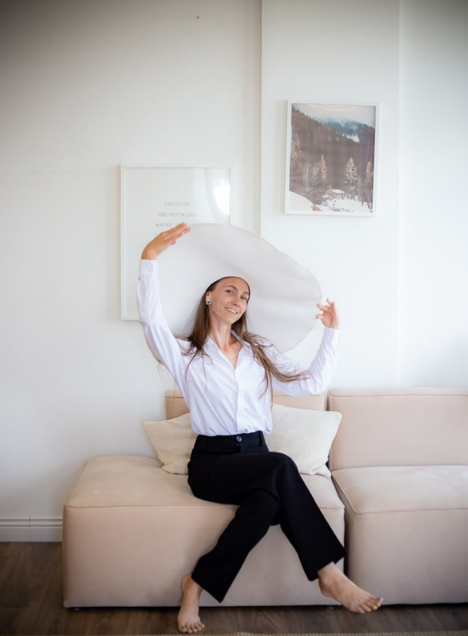Я родилась 9 марта 1989 года в городе Сергач. В 2006 году закончила Сергачскую среднюю общеобразовательную школу №4 на базе 11 классов и поступила в Лукояновский педагогический колледж. В 2009 году закончив обучение, поступила на работу в Сосновскую среднюю школу Сергачского района учителем математики 5-11 классов. В 2014 году переехала жить в Нижний Новгород. В 2017 году устроилась на работу в наш детский сад №165 младшим воспитателем. В этом же году была переведена на должность воспитателя. С первого дня работы я поняла, что детей нужно не просто любить, их нужно понимать. Думать как они, чувствовать как они и даже переживать как они!Только тогда можно получить от них доверие и любовь!
ДОСТИЖЕНИЯ
Современному детскому саду нужен воспитатель, мобильный, готовый к восприятию инноваций и умеющий действовать по-новому. Поэтому, чтобы соответствовать современным требованиям, я постоянно повышаю своё профессиональное мастерство, участвую в конкурсах и, конечно же, активно участвую в жизни детского сада и никогда не останавливаюсь на достигнутом.

 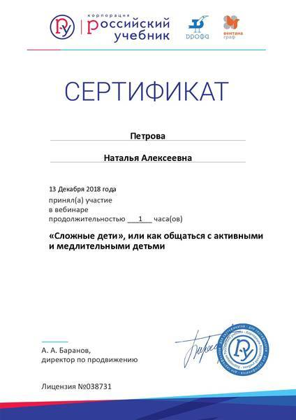
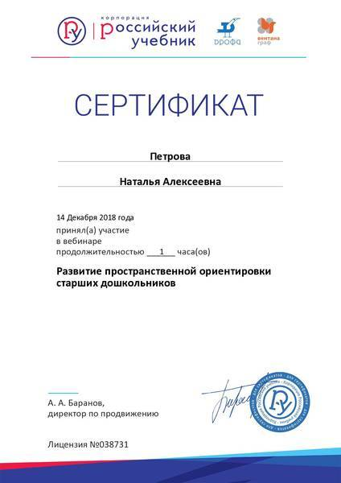
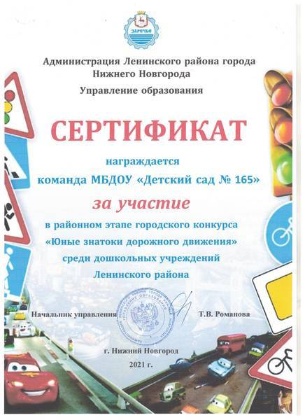
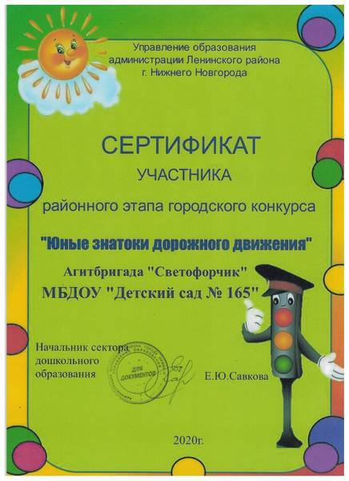
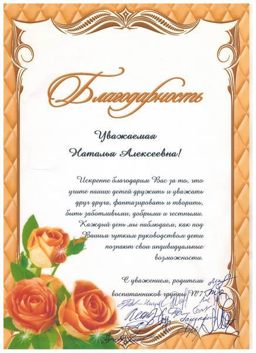
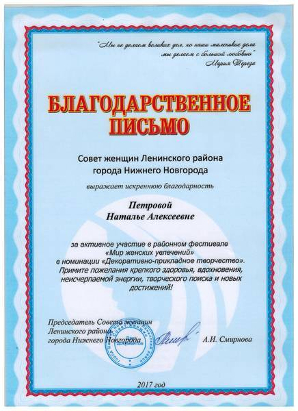
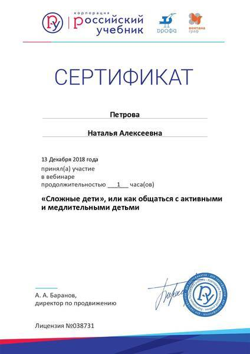
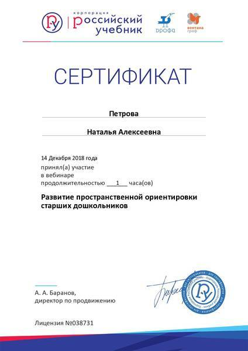
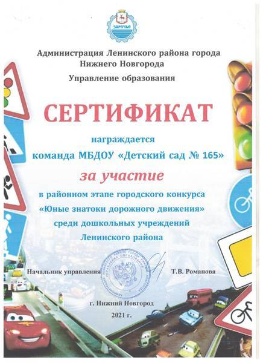
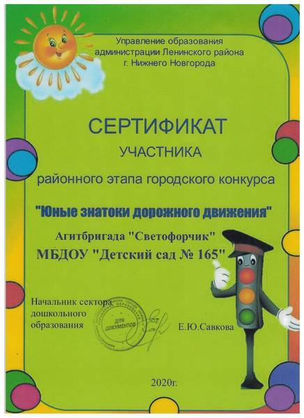
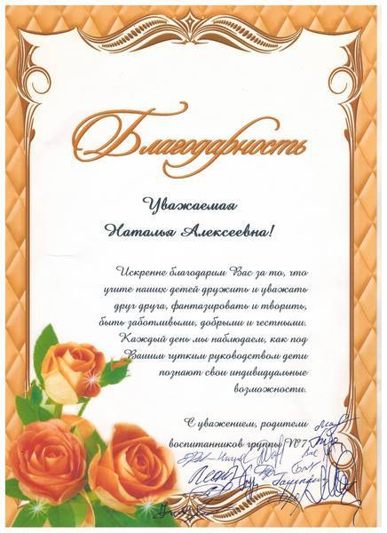
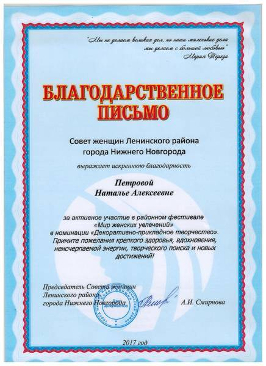
УВЛЕЧЕНИЯ
Мое любимое хобби – рисовать природу. Особенно мне нравятся цветы и разнообразные растения. Природа очень вдохновляет людей. Возможно, поэтому мы стремимся воссоздать ее на бумаге или холсте. Мы подражаем ей, ведь она – неизвестное и непостижимое творение, которому не найти объяснения. Поэтому и говорят, что искусство – это природа, созданная человеческими руками. Для меня рисование - это увлечение, это отдых, отвлечение от повседневных забот. Путешествие в мир прекрасного! Когда под твоей кистью, карандашом или мелком рождается картина - это восторг!


ОБРАТНАЯ СВЯЗЬ
УВАЖАЕМЫЕ КОЛЛЕГИ, ДРУЗЬЯ, ГОСТИ И ПОСЕТИТЕЛИ САЙТА! ЕСЛИ У ВАС ВОЗНИКЛИ ВОПРОСЫ ИЛИ ПРЕДЛОЖЕНИЯ, НАПИШИТЕ МНЕ! С РАДОСТЬЮ ОТВЕЧУ!